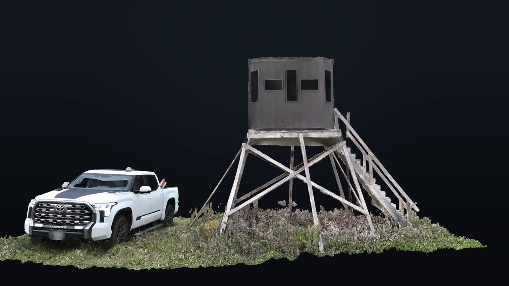
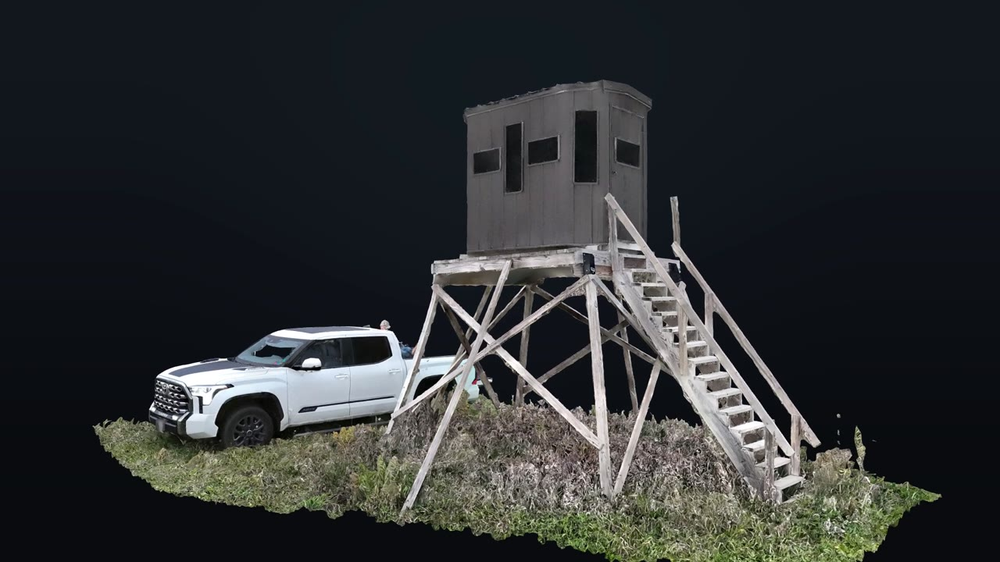
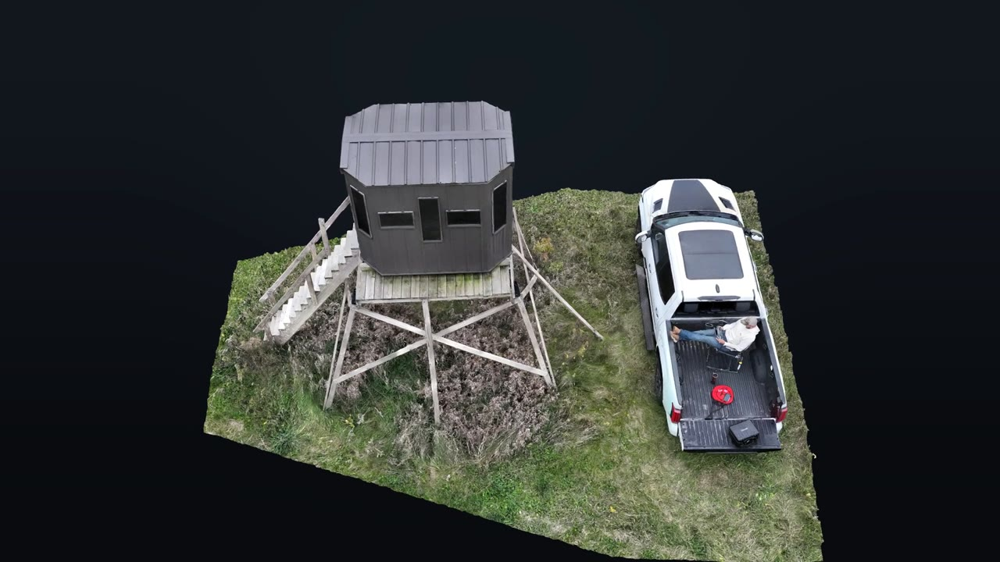
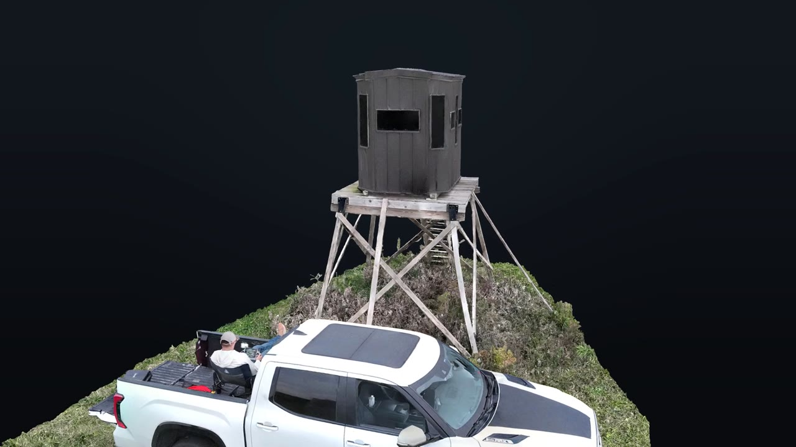
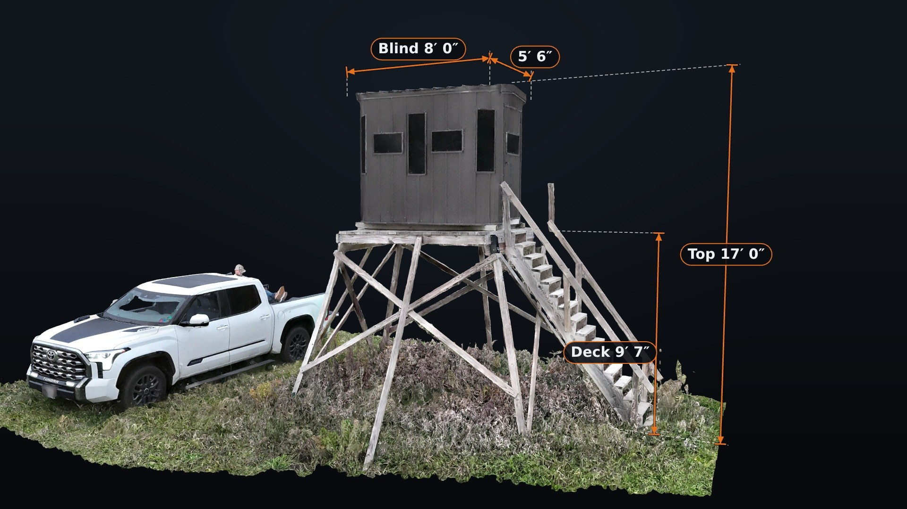
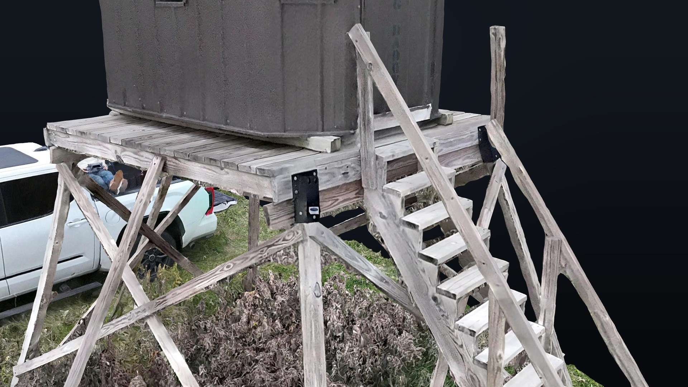
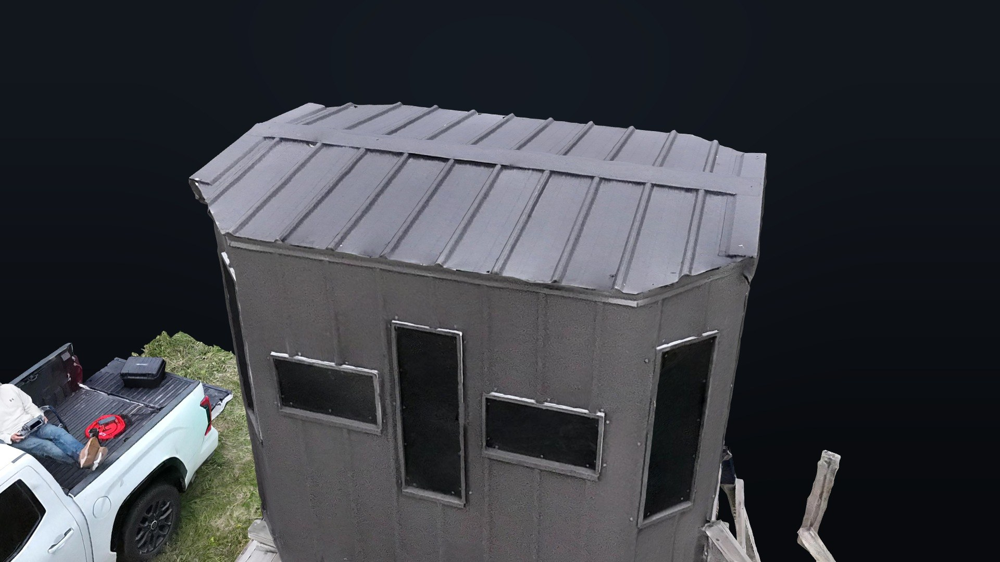

Elevated Data|Grounded Truth
novakgs.comCase study · 3D structure capture
Measurable 3D models.
One automated flight.
- Insurance & adjusters
- Contractors
- Property managers
- Ag lenders & appraisers
- Family legacy
On a private property in Dane County, we flew a single automated orbit around an elevated hunting stand and turned 842 RTK-tagged photos into a measurable, textured 3D model. It’s Wisconsin, after all. Deer stands are infrastructure.Every stair, brace and leg is there, at true real-world scale.
- Photos842 nadir + oblique
- Images aligned98% 825 of 842
- RTK fixed100% 842 of 842
- Image detail0.18 in per pixel
- Georeferencing RMSE0.031 ft ≈ 3/8 in
- Tie points255,608
- PositioningNetwork RTK WISCORS
- HeightsNAVD88 GEOID18, US ft
How it was made
One flight, every angle
Thin, open structures are hard to model. Ladder rungs, cross-bracing and railings tend to melt together or break apart. We used the Matrice 4E's Smart 3D Capture mode, which flies stacked orbits around the structure at several heights and angles, so every face is photographed from more than one direction.
Each photo is tagged with an RTK-corrected position from the Wisconsin CORS network. That puts the model at true scale and in real coordinates, so distances measured on it are real distances.
Processing was cropped to the stand and the ground around it. That keeps the model focused and the file sizes practical to share.
From the model
Views a ground photo can't give you




Measured from the model
Dimensions taken straight off the 3D data

Measured directly on the RTK-positioned model. Hard edges such as the blind walls repeat to within about an inch. Heights are measured to the top of the vegetation at the base, so they carry about 3 inches of uncertainty. No tape, no ladder, no climbing.
Up close
Detail you can actually inspect


Both views are zoomed in on the same model, not separate photos. Boards, hardware, weathering and roof seams are all readable, which is enough for a visual condition review without climbing. The original high-resolution photos come with the model for a closer look.
What you receive
Ready to share, ready to measure
- Interactive 3D viewer linkSpin, zoom and measure in any web browser. Nothing to install.
- Orbit videoA smooth loop for listings, social posts and presentations.
- Still rendersClean elevations and overhead views from any angle.
- 3D data files
OBJOSGBLASfor CAD, modeling and engineering software.
Who it's for
Where 3D structure capture earns its keep
- Insurance & adjustersA storm damages a pole barn. The model records the roof and framing before cleanup starts, with measurements an adjuster can take from a desk.
- ContractorsBefore re-roofing or adding on to an outbuilding, the crew gets real dimensions and a model of what stands there now. No ladder day to scope the job.
- Property managers & ownersA yearly capture of towers, sheds and outbuildings. Comparing one year to the next shows what is changing before it becomes a repair bill.
- Ag lenders & appraisersFarm buildings documented as they stand, measured and shareable, for valuations, insurance schedules or a farm transfer.
- Family legacyThe barn, cabin or deer camp your family grew up with, preserved before it changes hands. Every relative can explore it from their phone.
3D models are produced from drone photography for visualization and measurement. They are not a land survey and do not establish property boundaries.
Have a structure you need documented?
Tell us what it is and where it is. We'll reply within one business day.